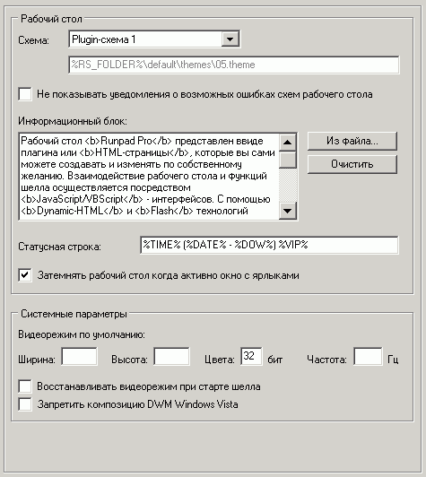

Наиболее важные опции на этой вкладке:
Схема рабочего стола
Можно указать путь к HTML-файлу (URL), или же выбрать схему из поставляемых в комплекте с шеллом.
О том, как создавать свои схемы, см.
здесь
Информационный блок
Можно указать информационно-рекламный блок из многострочного HTML-текста, который будет показан пользователю на схеме.
Вписать текст можно вручную, или же указать его местоположение из файла (возможно сетевого).
Если оставить поле пустым, то информационный блок отображаться не будет.
Статусная строка
Можно указать любую статусную строку для отображения на схеме. В ней допустимы следующие переменные:
%TIME% - текущее время
%DATE% - текущая дата
%DOW% - день недели
%MACHINE% - описание машины
%LOC% - местоположение машины
%VIP% - название текущей VIP-сессии
Также эту строку можно менять через
API шелла
Если оставить поле пустым, то статусная строка отображаться не будет.
Видеорежим по умолчанию
Если установлены "ширина экрана", "высота" и "кол-во бит на пиксель" ("частота монитора" - опционально), то при выборе пункта меню "Восстановить видеорежим" будет осуществлен переход в указанный режим.
Если же не установлены, то за базовый видеорежим берется тот, который был при старте системы.
Восстанавливать при старте
Позволяет восстанавливать видеорежим (обычно после выхода из проблемных игр) при каждом старте шелла.
Запретить композицию DWM Windows Vista/7
В Windows Vista/7 запрещает композиции окон и эффекты их отображения (3D Flip и пр.).